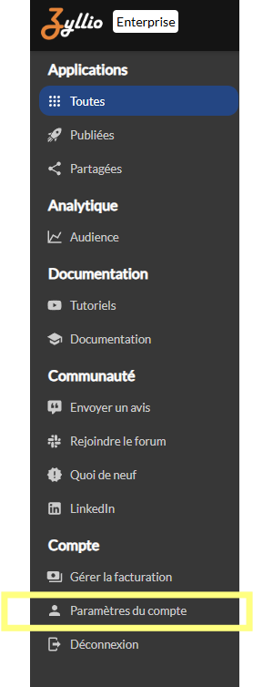
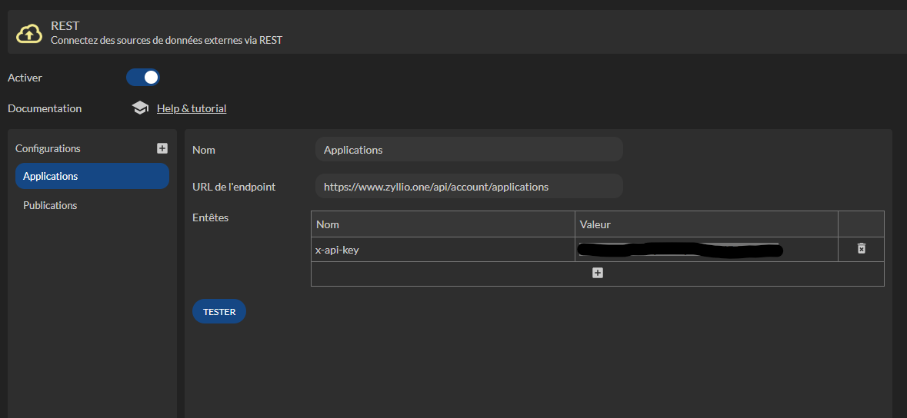
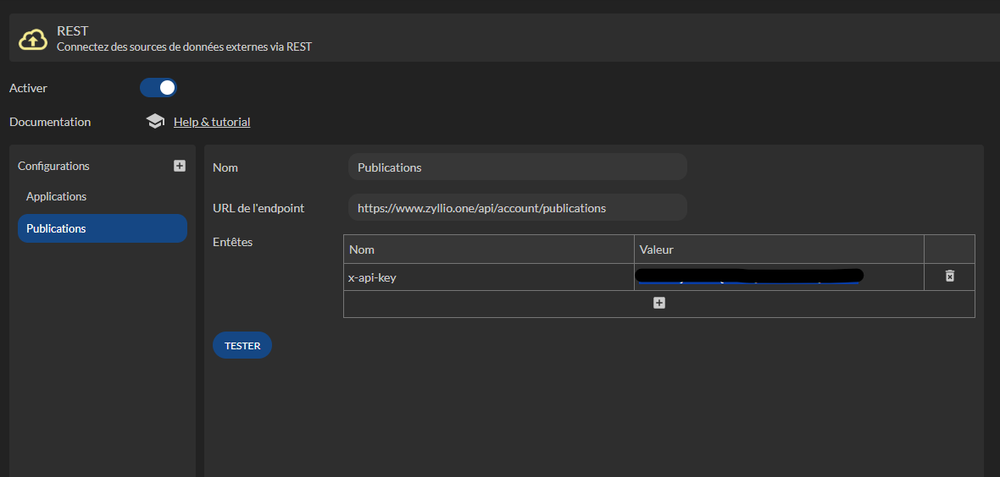
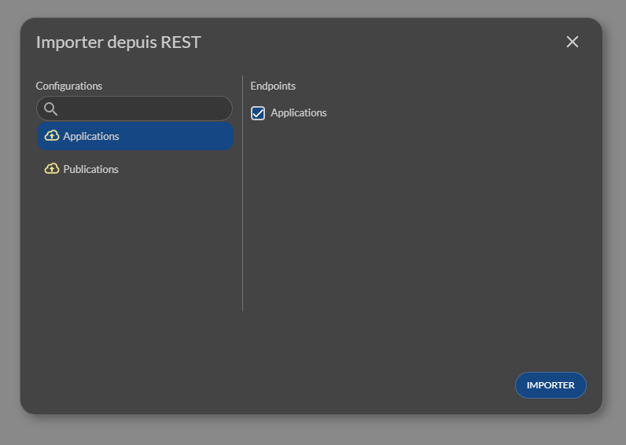
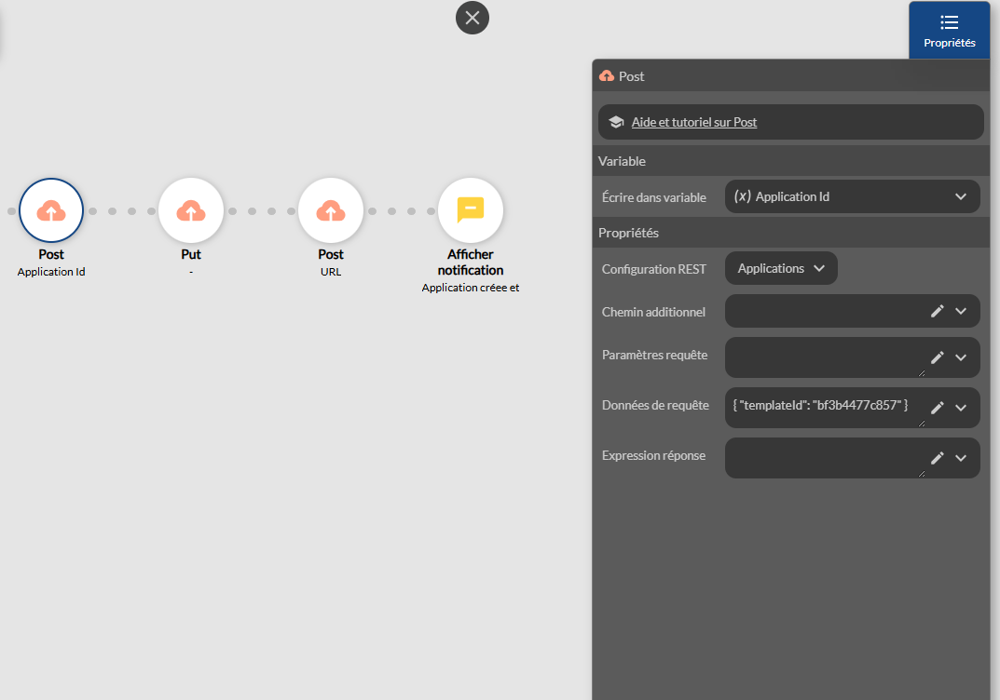
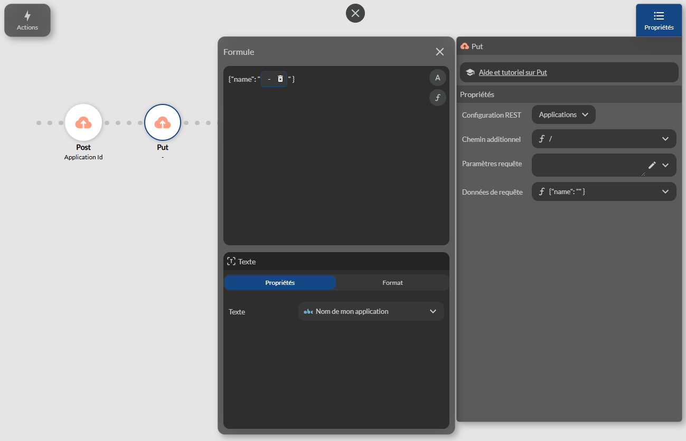
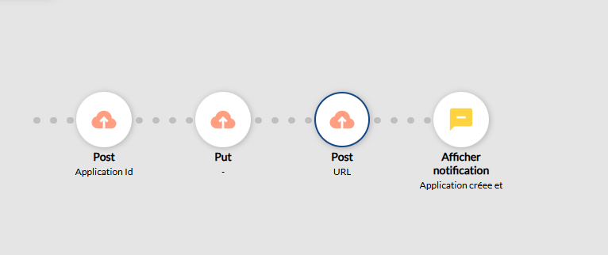

API SAAS
Disponible depuis le plan Entreprise
Introduction
Cette documentation d�crit les API disponible pour mettre en place une application Saas qui permet d�automatiser :
- La cr�ation d�applications � partir d�une autre application �mod�le�
- La publication d�applications
- La modification d�applications
- La synchronisation d�applications
Le pr�fix de l�URL est : https://www.zyllio.one/api/account/
Documentation des endpoints
| M�thode | Chemin | Headers | Contenu | Commentaire | R�ponse |
|---|---|---|---|---|---|
| GET | /applications | x-api-key | - | Liste les applications li�es � la cl� API | ApplicationSummaryModel[] |
| POST | /applications | x-api-key | CreateApplicationModel | Cr�e une application depuis un template | string |
| PUT | /sync-applications/:id | x-api-key | SyncApplicationModel | Synchronise une application | void |
| PUT | /applications/:id | x-api-key | UpdateApplicationModel | Met � jour une application | void |
| POST | /publications/:id | x-api-key | - | Publie une application | void |
Types
ApplicationSummaryModel
| Champ | Type | Description |
|---|---|---|
| id | string | Identifiant unique de l�application |
| name | string | Nom de l�application |
| lastUpdated | Date | Date de derni�re mise � jour |
| screenNumber | number | Nombre d��crans |
| tableNumber | number | Nombre de tables |
| pluginNumber | number | Nombre de plugins |
| userName | string | Nom du propri�taire |
| string | Email du propri�taire | |
| description | string | Description de l�application |
| url | string | URL de l�application |
| shares | string[] | Emails ou IDs des partages |
| icon | string | URL ou chemin de l�ic�ne |
CreateApplicationModel
| Champ | Type | Description |
|---|---|---|
| templateId | string | ID du template � utiliser pour la cr�ation |
SyncApplicationModel
| Champ | Type | Description |
|---|---|---|
| fromApplicationId | string | ID de l�application source � synchroniser |
| screens | boolean | Synchroniser les �crans (true/false) |
| theme | boolean | Synchroniser le th�me (true/false) |
UpdateApplicationModel
| Champ | Type | Description |
|---|---|---|
| name | string | Nom de l�application |
| description | string | Description de l�application |
| icon | string | URL ou chemin de l�ic�ne |
Cr�er une application SAAS
Cl� d�API
La cl� d�API est disponible depuis les param�tres de votre compte depuis l��cran principal

Cette section vous permet de copier la cl� d�API

D�finir les API REST
Il est n�cessaire de d�finir 2 configurations dans les param�tres REST
- applications - pour cr�er et modifier des applications
- publications - pour publier des applications

puis

Lister les applications
Les applications peuvent �tre import�es depuis l�onglet Donn�es
Cliquez sur le menu Importer puis REST, s�lectionnez Applications et enfin Importer

Une table REST, dont le contenu est dynamique, contient les applications. Il vous suffit d�utiliser une composant List ou Grid pour afficher les applications

Cr�er une application
Supposons que vous souhaitez proposer un �cran d�accueil qui permet � vos utilisateurs de cr�er une application � partir de l�une de vos applications qui sert de mod�le

Pour cr�er une application vous devrez utiliser l�action REST Post selon l�aper�u suivant

Le param�tre templateId fait r�f�rence � votre application mod�le. Le r�sultat de cet appel est un nouvel identifiant d�application appel� Application Id
Modifier une application
Pour modifier une application, il faut utiliser une action REST Put
La param�tre Chemin additionnel fait r�f�rence � l�application cr�er par l�action pr�c�dente
Notez que la formule contient un / avant la variable

Le param�tre Donn�es de la requ�te d�finit le nouveau nom de l�application sous forme JSON comme suit

Veuillez v�rifier les espaces et les guillemets
Publier une application
Pour publier une application, il faut utiliser une action REST Post sur la configuration Publications

Voici la s�rie d�actions qui cr��, renomme et publie une application
